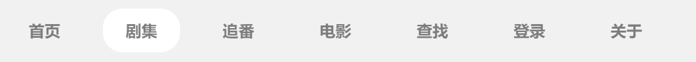
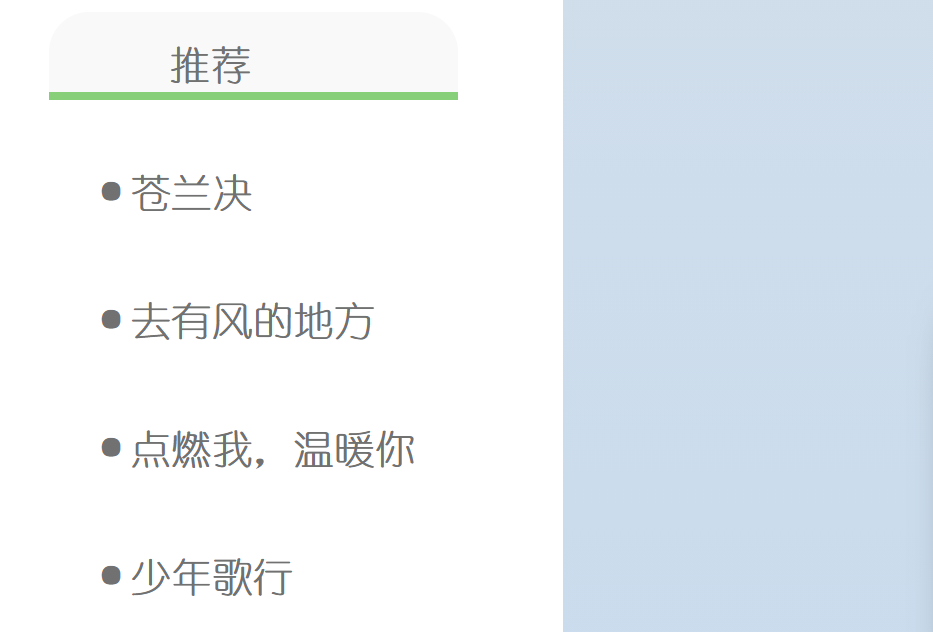

小组成员
曾 增 0223215 廖子怡 0223522
肖 静 0223283
子网页位置
导航栏分别对应六个子网页（报告位于“关于”这一导航栏/首页底部），“剧集”子网页下的左侧边栏对应余下四个子网页，加上首页这一网页，共有十一个网页，符合要求。


网站介绍
名 称：IN WATCH； 主 题：视频网站；
选题动机：泛娱乐产业是文化产业的重要组成部分，随着我国网络基础设施的逐步完善和网络强国建设步伐加快，泛娱乐产业逐渐成为数字经济发展的重要支柱和和新经济发展的重要引擎。组内各成员认为应当择取熟悉的、贴近日常生活的主题制作网页，因而选取了视频主题，与大家的日常生活息息相关，并且是大多数人日常生活中不可缺少的娱乐方式。

网站内容模块与组织结构
网站页面的大致内容有剧集、追番和电影三个模块。剧集、剧集子也追番和电影页面都可通过导航栏直接返回主页，查找页面点击查找返回，登录页面点击“登录”按钮返回。
其中剧集的内容为有关近期热播的电视剧，额外配备四个网页对左侧边栏四部电视剧进行详细说明；追番的内容为八部受人喜爱的动漫作品，采用左右间隔的方式下滑依次出现；电影的内容运用了3D翻转效果展示了九部电影作品。同时网站配备了查找模块以及登录模块，附加关于模块查看报告内容。
网站内容
技术：HTML,CSS,JavaScript。
工具：Visual Studio Code。
主要内容与步骤:
1.首先设计主网页，确定导航栏的内容
2.根据导航栏内容设计查找、登录页面
3.设计剧集，追番，电影三个重点网页
4.丰富剧集里的内容，设计四个具体的电视剧网页
5.运用HTML、CSS、js技术完善网页呈现效果及界面风格
未解决的问题：
登录页面无法储存用户信息
查找页面无法正常搜索
最终结果与讨论
纵观整体的网页设计以及最后的呈现效果，组内三人均十分满意。色调的选取为蓝色是为了摆脱低级审美这一被频繁诟病的问题，大量技术的使用也是为了让此次大作业的效果达到最好，最终成品虽然仍然有不足之处，但我们还是自诩美观。
感谢曾增组长在此过程中对组员的帮助以及发挥的强大的领导作用，网页中大部分的完成效果均要依托于组长的劳动，在此表示真挚的感激。展望未来，小组成员们会继续自我学习关于html、css以及js的相关内容，完备自己的专业知识。最后，希望老师看到我们小组的努力，给予此次大作业一个满意的分数，预祝老师新年快乐、阖家幸福。